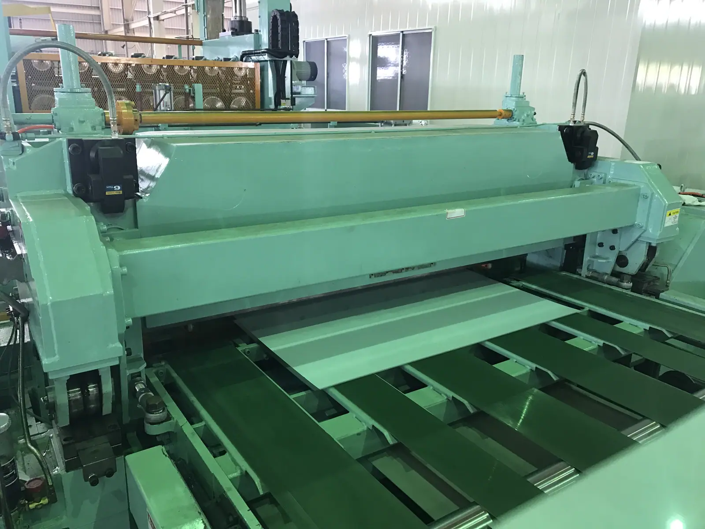

飛剪改造（Rotary shear retrofit）
為越南的鋼捲加工廠改造飛剪線：更換控制器、伺服馬達、驅動器與長度編碼器，保留狀況良好的機構部分。典型改造案例中，裁切長度公差由 ±0.3 mm 以上降到 ±0.1 mm 以內，產量提升 20% 以上。
改造前改造後（典型案例）
改造前後比較
| 項目 | 改造前 | 改造後（典型案例） |
|---|---|---|
| 裁切長度公差 | 超過 ±0.3 mm | ±0.1 mm 以內 |
| 刀輥加減速 | 慢，限制產線速度 | 向量伺服快速響應 |
| 產量 | 比較基準 | 提升 20% 以上 |
| 耗電 | 耗電大，煞車能量白白浪費 | 煞車能量回生再利用，降低電費 |
數據來自典型改造案例。實際效果依線速、材料厚度與機構現況而定，CMV 會在現場勘查後確認預期改善幅度。
適用對象
- 越南的鋼捲加工中心（coil center），定尺裁切板材
- 鍍鋅板、彩色鋼板、鋼管工廠的飛剪線
- 浪板成型機、C/Z 型鋼成型機製造商，需要飛剪電控
- 公差大、線速被刀輥拖慢，或舊控制器已停產缺料的產線
詢價時請提供
- 線速（m/min）
- 材質、板厚與板寬
- 常用剪切長度、目前公差與目標公差
- 現有控制器、馬達、驅動器的品牌與型號
- 產線運轉中的照片或影片（可用 Zalo 傳送）
CMV 在產線上更換的部分
CG 數位控制器＋VFI-CG80 驅動器
- 開捲
- 整平
- 量測輪＋編碼器將長度訊號傳回控制器
- 飛剪SVMF 伺服依控制器指令同步運轉
- 堆疊
設備範圍
- 伺服馬達
- SVMF，0.75–132 kW，IP54／IP23
- 驅動器
- VFI-CG80，220 V 級 2–25 HP，440 V 級 2–400 HP
- 控制器
- CG 全數位式，2／4／8 軸
- 長度量測
- 量測輪編碼器，全閉迴路
- 電控盤
- 控制盤、MCC 盤、PLC，依產線配置
- 板厚、板寬、最高線速
- 依各產線確認，寫入技術提案
商務條件
- 現場勘查
- 到廠勘查，或依照片、影片與產線資料評估
- 工期與停機時間
- 寫在報價中
- 保固
- 寫在報價與合約中
- 備品
- 由越南 CMV 供應
- 合約與發票
- 與 CÔNG TY TNHH CHARGER MECHATRONIC 簽約（越南稅號 0319206171），越南當地開立發票
合作流程
提供產線資料
線速、板厚、板寬、目前公差，並用 Zalo 傳照片或影片。
勘查評估
到廠勘查，或依您提供的資料評估。
技術提案與報價
更換範圍、停機時間、保固。
施工與驗收
在實際生產速度下量測裁切長度。
常見問題
中國製或使用多年的飛剪線可以改造嗎？
通常可以。CMV 更換控制器、伺服馬達、驅動器與長度編碼器，保留狀況良好的機構部分。能否改造，會在看過照片、影片、產線資料或現場勘查後確認。
需要停線多久？
依產線現況與改造範圍而定。停機時間會寫在報價中，方便工廠安排生產。
改造後的公差怎麼驗收？
在實際生產速度下，量測連續裁切板材的長度。樣本數、量測方式與驗收標準，在施工前寫入合約。
為什麼改造能降低電費？
刀輥減速時，驅動器把煞車能量回送電力系統再利用，而不是轉成熱能浪費。節省幅度依各產線的剪切週期與速度而定。
CMV 和 NUSCO 的關係？
CMV 是 NUSCO（日本）在越南的獨家官方代理商。
提供產線資料，索取改造報價
服務時間：週一至週五（越南時間）。可用越南文、中文、英文溝通。